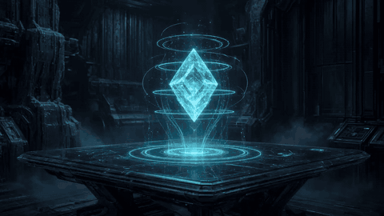

CRYO Pulse

assets/animations/cryo-pulse.gifA focused visual index for the repository-native GIF layer: local assets, no runtime dependencies, explicit accessibility text and clear evidence boundaries.
assets/animations/cryo-pulse.gif
assets/animations/cryo-orbit.gifassets/animations/cryo-memory.gif
assets/animations/cryo-nexo.gifassets/animations/cryo-kiblox.gif| Surface | Pulse | Orbit | Flagship GIFs | Role |
|---|---|---|---|---|
| Root README | Hero | Hero | Showcase | Immediate visual identity |
| Interactive index | Status | Systems | Memory / HUD / Voxel | Public profile |
| Animation Gallery | Showcase | Showcase | Showcase | Dedicated motion reference |
assets/animations/.